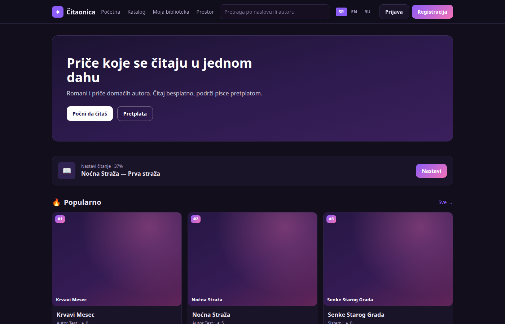
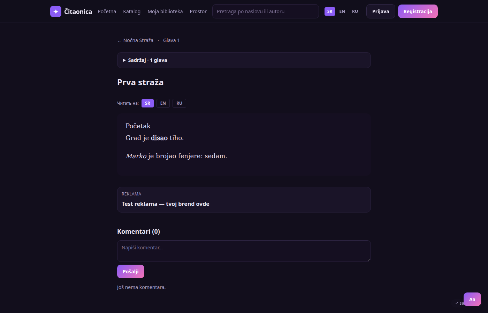
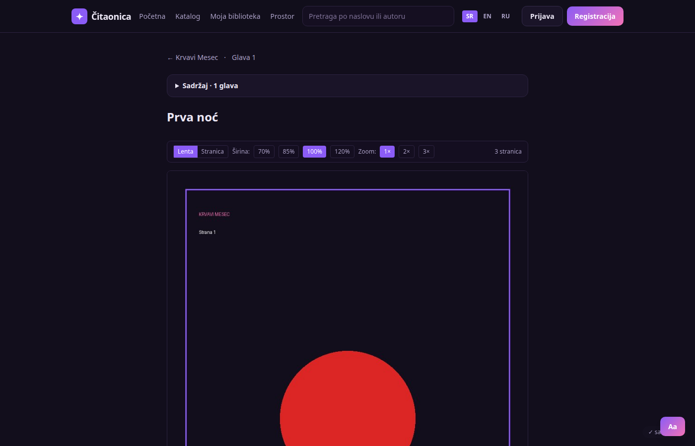
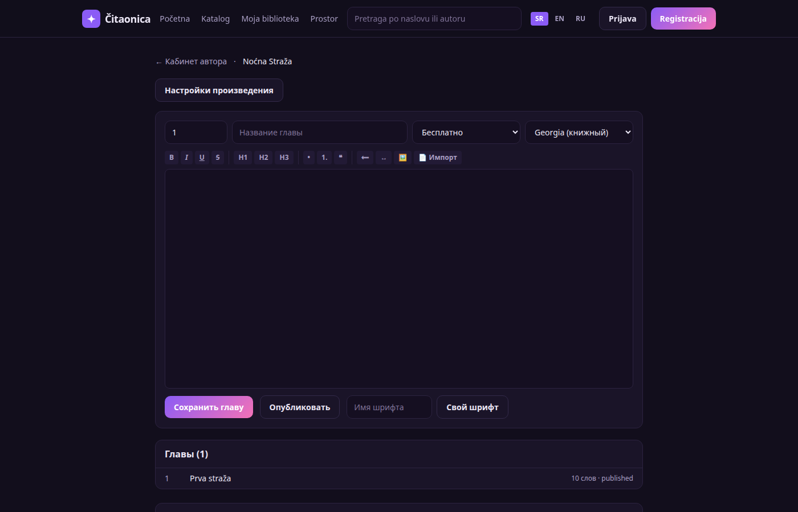

Платформа чтения с ИИ-переводом
Next.js · TypeScript · Ollama (qwen2.5) · PostgreSQL · Docker · 2026
Полный продукт с нуля: каталог, страницы произведений, читалка, подписки, кабинет автора, админ-панель. Главное — ИИ-перевод глав на локальной модели: промпт-каркас с ролями и правилами, глоссарий терминов, кэш по хэшу.
- глава переводится ~6 секунд, повтор — мгновенно из кэша; нулевая стоимость — модель локальная, без платных API
- читалка комиксов: пачечная загрузка, перетаскивание порядка, зум 1–3× (пинч и двойное касание), лента/постранично
- редактор автора на Tiptap с импортом .docx/.md/.txt, иллюстрациями и своими шрифтами
- 33 автотеста (vitest), production-сборка, Docker Compose + PostgreSQL, бэкапы
- проверено: 18/18 страниц без ошибок, 50 одновременных запросов за 624 мс
Next.jsTypeScriptOllamaLLMPostgreSQLDockervitest




AI / LLMлокальные модели (Ollama, qwen2.5), промпт-инжиниринг, глоссарии и кэш, MCP-инструменты, агентные сценарии, контроль стоимости инференса
BackendRust (axum, sqlx), Node.js, Go; PostgreSQL, SQLite, SurrealDB; миграции, мульти-тенантность, права по ролям
DataPython (pandas), Airflow, ClickHouse, SQL, Superset, Google Sheets API
FrontendNext.js, React, TypeScript, Tailwind, Tiptap
DevOpsLinux, systemd, Docker/Compose, Nginx, Cloudflare Tunnel, DNS, TLS, iptables, Prometheus, бэкапы
ИнтеграцииStripe, Discord API, SEF/eFaktura, Resend, Ollama